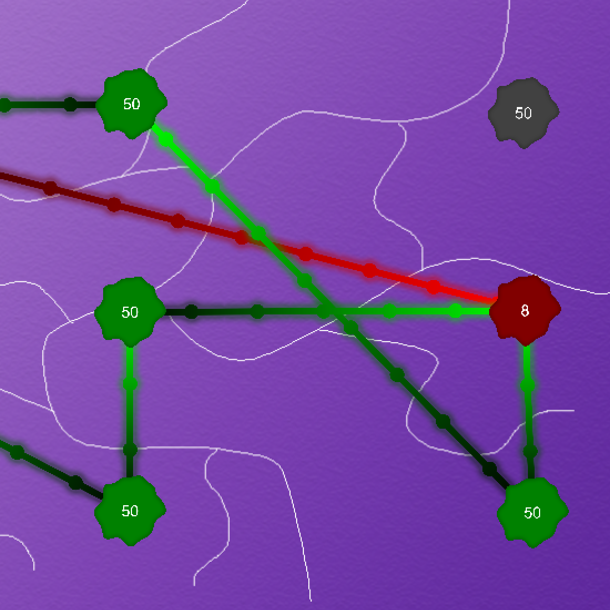

Cell Wars
Recreated the mobile game Cell Expansion Wars in Unity
Cell Wars on mobile platforms has always been an interesting puzzle game to me. Recreating this allowed me to explore Unity's shadergraph and by extension HLSL. I also managed to explore Unity's LineRenderers and experiment with them, coming up with some pretty unique effects for the lines connecting the cells.
Technologies Used
- C#
- Unity2D
- Unity Shader Graph